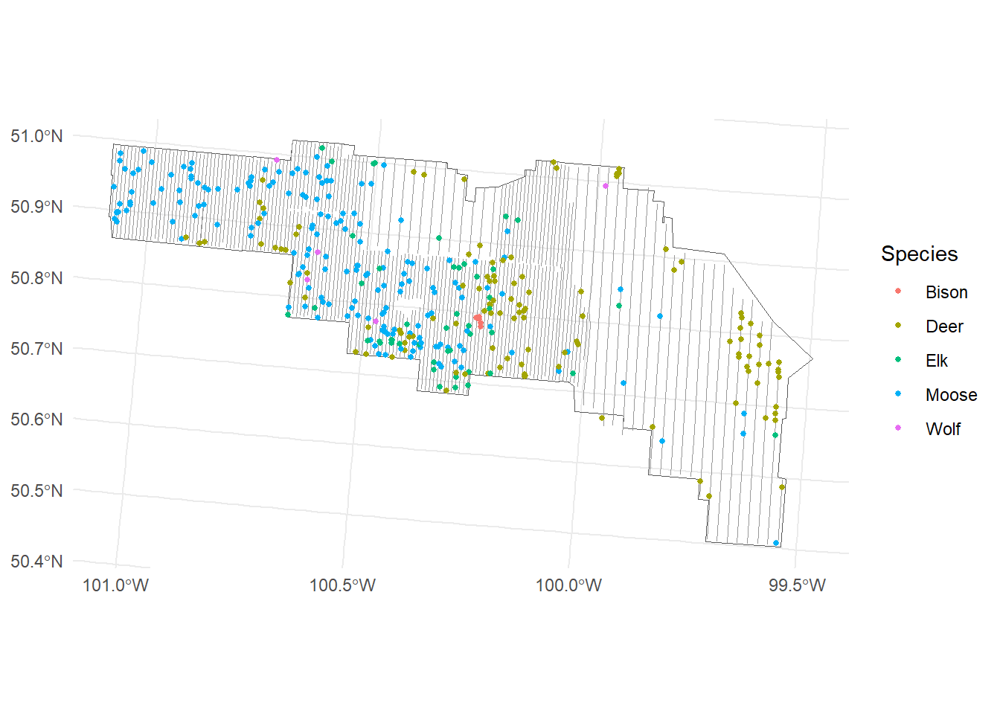
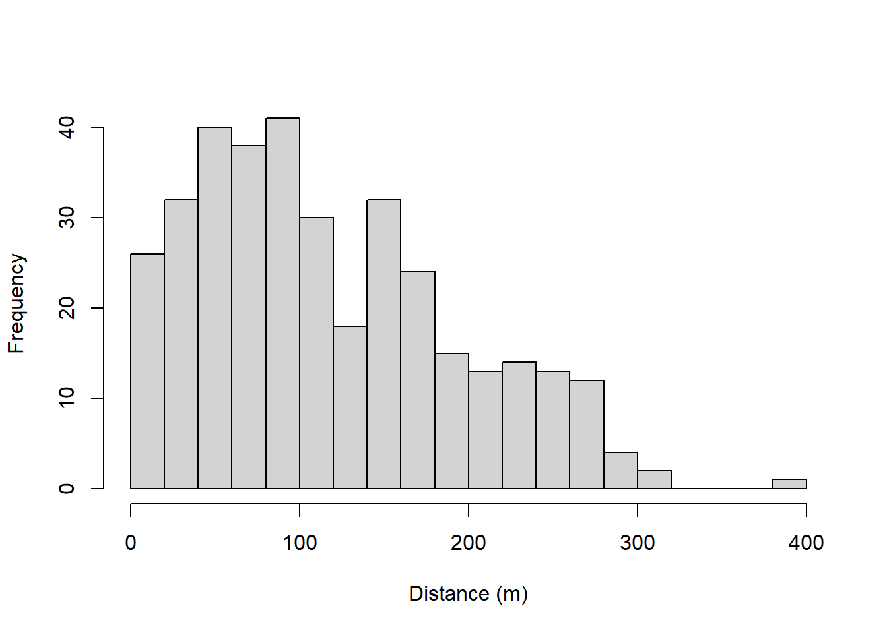

library(here) # file paths relative to the project root
library(sf) # vector spatial data
library(dplyr) # data manipulation
library(units) # unit-aware lengths
library(ggplot2) # plottingFormatting aerial survey data for density surface models
Introduction
This article is the first step of the R workflow for analysing aerial surveys of moose and other ungulates with distance sampling. We take the raw survey data, a table of sightings and a set of flight lines, and turn them into the three tables that Distance and dsm expect: detection data, segment data and observation data. The general principles are covered in the dsm article Data formatting for density surface models; here we apply them to a real thermal-drone survey.
The example data come from an aerial ungulate survey of Riding Mountain National Park (RMNP), Manitoba, in February 2025. The survey was flown by a fixed-wing drone (Superwake SW-117) carrying a gimbal-mounted thermal and RGB camera, along north–south transects spaced 600 m apart (1.6 km in places). Video was recorded continuously. For each detection the aircraft circled the group to count and identify the animals, and the group’s position was obtained by projecting the camera’s view onto a digital elevation model. Moose, elk, white-tailed deer, bison and wolves were recorded. The survey and its detections are described in Superwake’s RMNP survey report, which includes a map of the same dataset.
Prerequisites
We need the following packages:
The example data can be downloaded as rmnp_example_data.zip (36 MB). The following chunk downloads and unzips it into data/RMNP/ if it is not there yet, so you can follow along from an empty project folder.
if (!file.exists(here("data", "RMNP", "RMNPsightings.csv"))) {
dir.create(here("data"), showWarnings = FALSE)
zip_file <- here("data", "rmnp_example_data.zip")
if (!file.exists(zip_file)) {
download.file("https://hambrecht.github.io/mri/data/rmnp_example_data.zip",
zip_file, mode = "wb")
}
unzip(zip_file, exdir = here("data"))
}If you use your own data, the minimum requirements are a table of sightings with coordinates, species and group size, and the flight lines flown on effort as a line layer.
All spatial operations happen in a projected coordinate reference system (CRS) so that distances and lengths are in metres. We use NAD83(CSRS) / Canada Atlas Lambert (EPSG:3979), which works across Canada; a local UTM zone is equally good. We define it once and use it everywhere.
LOCAL <- 3979 # projected CRS (metres) used throughout the workflow
GLOBAL <- 4326 # WGS84 longitude/latitude, as recorded in the fieldOverview
For a line-transect density surface model we need to build:
- Detection data (
dist): one row per sighting within the truncation distance, with the perpendiculardistance, the groupsize, a uniqueobjectID and any covariates that might affect detectability. This is what the detection function is fitted to. - Segment data (
segs): one row per segment of transect, with a uniqueSample.Label, the segment lengthEffort, the centroid coordinatesx,yand any habitat covariates. - Observation data (
obs): a lookup table linking eachobjectto theSample.Labelof the segment it was seen from, along withsizeanddistance.
The tables are linked by object (detection ↔︎ observation) and Sample.Label (observation ↔︎ segment).
The survey data
We read the raw files as they are: the sightings as a CSV file with latitude and longitude in WGS84, the flight lines flown on effort, the study area boundary, and the covariate rasters used later.
sightings_raw <- read.csv(here("data", "RMNP", "RMNPsightings.csv"))
transects_raw <- st_read(here("data", "RMNP", "SimpliedFlightTrack.shp"), quiet = TRUE)
area_raw <- st_read(here("data", "RMNP", "RMNPArea.shp"), quiet = TRUE)
lidar <- terra::rast(here("data", "RMNP", "lidar", "lidar_pabove2_zmax_10m.tif"))
names(lidar) <- c("pabove2", "zmax")
head(sightings_raw) Species size Latitude Longitude
1 Bison 4 50.79266 -100.2495
2 Bison 7 50.79422 -100.2436
3 Bison 2 50.79136 -100.2426
4 Bison 6 50.78630 -100.2385
5 Bison 21 50.78118 -100.2375
6 Deer 1 50.71589 -100.2134Before analysis, the detections were quality-checked. Records with missing coordinates, records made while moving between transects or after dusk, and animals that could not be identified were removed; the file contains the 357 records that remained. We keep the five target species.
SPECIES_KEEP <- c("Moose", "Elk", "Deer", "Wolf", "Bison")
sightings_raw <- filter(sightings_raw, Species %in% SPECIES_KEEP)
nrow(sightings_raw)[1] 357Checking the data
Most problems in a distance sampling analysis come from the input data. Examples are coordinates in the wrong system, group sizes stored as text, flight lines that are polygons, or sightings far from any line. These rarely cause an error; instead they quietly give wrong distances or wrong effort. check_survey_data() tests the raw inputs before any processing. It is defined in workflow/R/check_survey_data.R, shown in full at the end of this article.
source(here("workflow", "R", "check_survey_data.R"))We pass the sightings (with the names of their species, group size and coordinate columns), the flight lines, the study area, the projected CRS we want to work in and, optionally, the covariate rasters. Each row of the result is one check, with the status PASS, WARN (worth a look), FAIL (must be fixed) or INFO. By default the function stops if any check fails; here we set stop_on_fail = FALSE to see the whole table.
checks <- check_survey_data(
sightings_raw, transects_raw, area_raw, crs = LOCAL,
species = "Species", size = "size", coords = c("Longitude", "Latitude"),
covariates = lidar, stop_on_fail = FALSE
)PASS sightings: has rows
PASS sightings: required columns
PASS sightings: coordinates present
PASS sightings: longitude/latitude in range
PASS sightings: group size numeric
PASS sightings: group size present
FAIL sightings: group size > 0: 2 <= 0
PASS sightings: group size whole numbers
PASS sightings: species recorded
INFO sightings: per species: Moose = 181, Deer = 118, Elk = 48, Bison = 5, Wolf = 5
PASS sightings: no duplicate records
PASS transects: sf line layer
PASS area: sf polygon layer
PASS transects: CRS defined
PASS area: CRS defined
PASS transects: valid geometries
PASS area: valid geometry
PASS target CRS projected, in metres
PASS transects: no zero-length lines
INFO transects: total length: 3756.6 km in 333 features
WARN sightings: inside study area: 1 outside
PASS transects: inside study area
INFO distances: median / 95% / max (m): 101 / 262 / 388
PASS distances: no extreme outliers
PASS covariates: CRS defined
PASS covariates: cover study area
PASS covariates: values at sightingsOne check fails: two records have a group size of 0.
sightings_raw[sightings_raw$size <= 0, ] Species size Latitude Longitude
106 Elk 0 50.74593 -100.4254
122 Elk 0 50.74514 -100.4589Both are elk groups that were recorded twice, from neighbouring transects. When the video was reviewed, the positions confirmed that each was a group already recorded, and the repeat was set to a group size of 0. A record with no animals contributes nothing to abundance, but left in, its distance would still enter the detection function. We remove both and run the check again, this time letting it stop if anything fails.
Always look at what a failed check points to before deciding how to fix it. Here the zeros were deliberate; in another survey they might be data-entry errors that need the correct group size instead.
sightings_raw <- filter(sightings_raw, size > 0)
checks <- check_survey_data(sightings_raw, transects_raw, area_raw, crs = LOCAL,
covariates = lidar)PASS sightings: has rows
PASS sightings: required columns
PASS sightings: coordinates present
PASS sightings: longitude/latitude in range
PASS sightings: group size numeric
PASS sightings: group size present
PASS sightings: group size > 0
PASS sightings: group size whole numbers
PASS sightings: species recorded
INFO sightings: per species: Moose = 181, Deer = 118, Elk = 46, Bison = 5, Wolf = 5
PASS sightings: no duplicate records
PASS transects: sf line layer
PASS area: sf polygon layer
PASS transects: CRS defined
PASS area: CRS defined
PASS transects: valid geometries
PASS area: valid geometry
PASS target CRS projected, in metres
PASS transects: no zero-length lines
INFO transects: total length: 3756.6 km in 333 features
WARN sightings: inside study area: 1 outside
PASS transects: inside study area
INFO distances: median / 95% / max (m): 100 / 261 / 388
PASS distances: no extreme outliers
PASS covariates: CRS defined
PASS covariates: cover study area
PASS covariates: values at sightingsThe remaining warning is expected: one sighting lies just outside the park boundary. It was seen from a flight line on effort, so we keep it.
Projecting the data
With the inputs checked, we convert the sightings to spatial points and bring all three layers into the workflow CRS. Each flight line’s ID becomes Transect.
sightings <- sightings_raw |>
select(Species, size, Latitude, Longitude) |>
st_as_sf(coords = c("Longitude", "Latitude"), crs = GLOBAL, remove = FALSE) |>
st_transform(LOCAL)
sightings$object <- seq_len(nrow(sightings))
transects <- transects_raw |>
rename(Transect = ID) |>
st_transform(LOCAL)
area <- area_raw |>
st_transform(LOCAL) |>
st_union() |>
st_as_sf()
table(sightings$Species)
Bison Deer Elk Moose Wolf
5 118 46 181 5 sum(st_length(transects)) |> set_units("km")3756.593 [km]Moose were seen most often, followed by deer and elk. Bison and wolves were seen only a handful of times, too few to fit a density surface for, but they can still contribute to the detection function.
ggplot() +
geom_sf(data = area, fill = NA) +
geom_sf(data = transects, colour = "grey60", linewidth = 0.3) +
geom_sf(data = sightings, aes(colour = Species), size = 1) +
theme_minimal()
Detection data
Perpendicular distances
The distance from each sighting to the nearest flight line is its perpendicular distance.
nearest_line <- st_nearest_feature(sightings, transects)
sightings$distance <- as.numeric(
st_distance(sightings, transects[nearest_line, ], by_element = TRUE)
)
summary(sightings$distance) Min. 1st Qu. Median Mean 3rd Qu. Max.
0.6973 55.0951 100.0581 117.1489 170.1842 387.8370 hist(sightings$distance, breaks = 20, main = "", xlab = "Distance (m)")
Truncation
Sightings far from the line carry little information about the shape of the detection function and can make fitting harder. A common rule is to discard the furthest 5% of distances (Buckland et al. 2001). We compute the truncation distance once here and reuse it in every later step, so the segment strip width, the detection function and the density surface model all agree.
TRUNCATION_M <- as.numeric(quantile(sightings$distance, probs = 0.95))
TRUNCATION_M[1] 261.1512Segment data
Segmenting
The density surface model works on short pieces of transect called segments. Segments should be roughly square, so we make them about twice the truncation distance long (Miller et al. 2013). st_segmentize() adds vertices so that no edge is longer than this, and stdh_cast_substring() splits each line at every vertex, as in the dsm data formatting article.
# Split lines into vertex-to-vertex pieces.
# From https://dieghernan.github.io/201905_Cast-to-subsegments/
stdh_cast_substring <- function(x, to = "MULTILINESTRING") {
ggg <- st_geometry(x)
if (!unique(st_geometry_type(ggg)) %in% c("POLYGON", "LINESTRING")) {
stop("Input should be LINESTRING or POLYGON")
}
geom_list <- vector("list", length(ggg))
for (k in seq_along(ggg)) {
sub <- ggg[k]
geom_list[[k]] <- lapply(
1:(length(st_coordinates(sub)[, 1]) - 1),
function(i) rbind(
as.numeric(st_coordinates(sub)[i, 1:2]),
as.numeric(st_coordinates(sub)[i + 1, 1:2])
)
) |>
st_multilinestring() |>
st_sfc()
}
endgeom <- do.call(rbind, geom_list) |> st_sfc(crs = st_crs(x))
if (class(x)[1] == "sf") endgeom <- st_set_geometry(x, endgeom)
if (to == "LINESTRING") endgeom <- st_cast(endgeom, "LINESTRING")
endgeom
}SEGMENT_LENGTH_M <- 2 * TRUNCATION_M
segs <- transects |>
st_segmentize(dfMaxLength = set_units(SEGMENT_LENGTH_M, "m")) |>
stdh_cast_substring(to = "LINESTRING")Warning in st_cast.sf(endgeom, "LINESTRING"): repeating attributes for all
sub-geometries for which they may not be constantsegs$Effort <- as.numeric(st_length(segs))
segs <- segs |>
group_by(Transect) |>
mutate(Sample.Label = paste("2025-RMNP", Transect, row_number(), sep = "-")) |>
ungroup()
nrow(segs)[1] 7359summary(segs$Effort) Min. 1st Qu. Median Mean 3rd Qu. Max.
243.8 506.3 511.7 510.5 517.4 522.9 Effort must be a plain number rather than a units object, otherwise some internal checks in dsm() fail.
Linking observations and segments
Each sighting is assigned to its nearest segment. We measure the distance to the segment line here rather than to its centroid, which would be wrong near segment ends. Sightings beyond the truncation distance are then dropped.
nearest_seg <- st_nearest_feature(sightings, segs)
sightings$Sample.Label <- segs$Sample.Label[nearest_seg]
dist <- sightings |>
filter(distance <= TRUNCATION_M) |>
mutate(X = st_coordinates(geometry)[, 1], Y = st_coordinates(geometry)[, 2]) |>
st_drop_geometry() |>
as.data.frame()
nrow(dist)[1] 337Only now do we reduce the segments to their centroids. The centroid coordinates, in metres, become the x and y of the spatial smooth in the density surface model.
seg_xy <- st_coordinates(st_centroid(segs))Warning: st_centroid assumes attributes are constant over geometriessegs$x <- seg_xy[, "X"]
segs$y <- seg_xy[, "Y"]The observation table is a subset of the detection data columns:
obs <- dist[, c("object", "Sample.Label", "Species", "size", "distance")]
head(obs) object Sample.Label Species size distance
1 1 2025-RMNP-24-2 Bison 4 50.72374
2 2 2025-RMNP-25-18 Bison 7 220.69071
3 3 2025-RMNP-25-18 Bison 2 148.85981
4 4 2025-RMNP-2-1 Bison 6 140.27913
5 5 2025-RMNP-2-2 Bison 21 207.12219
6 6 2025-RMNP-5-1 Deer 1 131.75519Checking the tables
check_dsm_data() checks the three tables against what ds() and dsm() expect:
- the required columns are present;
- IDs are unique and every observation links to a detection and a segment;
- effort and distances are valid, and no column is still a
unitsobject.
The segments are still an sf object at this point, so we drop the geometry for the check.
checks <- check_dsm_data(dist, st_drop_geometry(segs), obs, truncation = TRUNCATION_M)PASS dist: required columns
PASS segs: required columns
PASS obs: required columns
PASS dist: plain data.frame (not sf)
PASS segs: plain data.frame (not sf)
PASS obs: plain data.frame (not sf)
PASS no units-class columns
PASS dist: object IDs unique
PASS obs: object IDs unique
PASS segs: Sample.Label unique
PASS obs -> dist: every object has a detection
PASS dist -> obs: every detection is linked to a segment
PASS obs -> segs: every Sample.Label exists
PASS segs: Effort > 0
PASS dist: distances >= 0
PASS dist: distances within truncation
PASS segs: coordinates presentSaving
We keep segs as an sf object (the line geometry is needed to extract habitat covariates in the next article) and save everything together.
dir.create(here("workflow", "outputs"), recursive = TRUE, showWarnings = FALSE)
saveRDS(
list(dist = dist, obs = obs, segs = segs, area = area,
TRUNCATION_M = TRUNCATION_M, LOCAL = LOCAL),
here("workflow", "outputs", "survey_data.rds")
)References
Buckland, S. T., D. R. Anderson, K. P. Burnham, J. L. Laake, D. L. Borchers, and L. Thomas. 2001. Introduction to Distance Sampling: Estimating Abundance of Biological Populations. Oxford University Press.
Miller, David L., M. Louise Burt, Eric A. Rexstad, and Len Thomas. 2013. “Spatial Models for Distance Sampling Data: Recent Developments and Future Directions.” Methods in Ecology and Evolution 4 (11): 1001–10. https://doi.org/10.1111/2041-210X.12105.
Appendix: the check functions
The two check functions, from workflow/R/check_survey_data.R. Copy the file into your own project and source() it. The tests in workflow/R/test-check_survey_data.R show each check catching the problem it is meant to catch.
# Compatibility checks for distance sampling / density surface model data.
#
# check_survey_data(): raw inputs (sightings, transects, study area, rasters)
# before any processing.
# check_dsm_data(): the formatted detection, segment, observation and
# prediction tables before fitting ds() and dsm().
#
# Both return a data.frame with one row per check (status PASS, WARN, FAIL or
# INFO), print it, and stop if any check FAILs (unless stop_on_fail = FALSE).
library(sf)
# Collects check results; `record(check, ok, detail)` adds a row.
new_checklist <- function() {
rows <- list()
record <- function(check, ok, detail = "", level = "FAIL") {
status <- if (isTRUE(ok)) "PASS" else level
if (status == "PASS") detail <- "" # details only where something needs attention
rows[[length(rows) + 1]] <<- data.frame(check = check, status = status, detail = detail)
invisible(isTRUE(ok))
}
info <- function(check, detail) record(check, FALSE, detail, level = "INFO")
result <- function(stop_on_fail) {
out <- do.call(rbind, rows)
cat(sprintf("%-4s %s%s\n", out$status, out$check,
ifelse(out$detail == "", "", paste0(": ", out$detail))), sep = "")
n_fail <- sum(out$status == "FAIL")
if (stop_on_fail && n_fail > 0) {
stop(n_fail, " check(s) failed; see the table above.", call. = FALSE)
}
invisible(out)
}
list(record = record, info = info, result = result)
}
check_survey_data <- function(sightings, transects, area, crs,
species = "Species", size = "size",
coords = c("Longitude", "Latitude"), coords_crs = 4326,
covariates = NULL, stop_on_fail = TRUE) {
cl <- new_checklist()
rec <- cl$record
# --- Sightings -------------------------------------------------------------
rec("sightings: has rows", nrow(sightings) > 0, sprintf("%d rows", nrow(sightings)))
needed <- c(species, size, if (!inherits(sightings, "sf")) coords)
missing_cols <- setdiff(needed, names(sightings))
if (!rec("sightings: required columns", length(missing_cols) == 0,
if (length(missing_cols)) paste("missing:", paste(missing_cols, collapse = ", ")) else "")) {
return(cl$result(stop_on_fail))
}
if (inherits(sightings, "sf")) {
n_empty <- sum(st_is_empty(sightings))
rec("sightings: no empty geometries", n_empty == 0, sprintf("%d empty", n_empty))
rec("sightings: CRS defined", !is.na(st_crs(sightings)))
pts <- sightings[!st_is_empty(sightings), ]
} else {
xy <- sightings[, coords]
bad_xy <- !stats::complete.cases(xy)
rec("sightings: coordinates present", !any(bad_xy), sprintf("%d rows without coordinates", sum(bad_xy)))
keep <- !bad_xy
if (identical(coords_crs, 4326)) {
out_range <- !bad_xy & (abs(xy[[1]]) > 180 | abs(xy[[2]]) > 90)
rec("sightings: longitude/latitude in range", !any(out_range),
sprintf("%d rows out of range (are longitude and latitude swapped or projected?)", sum(out_range)))
keep <- keep & !out_range
}
if (!any(keep)) return(cl$result(stop_on_fail))
pts <- st_as_sf(sightings[keep, ], coords = coords, crs = coords_crs, remove = FALSE)
}
if (nrow(pts) == 0) return(cl$result(stop_on_fail))
sz <- sightings[[size]]
rec("sightings: group size numeric", is.numeric(sz), class(sz)[1])
if (is.numeric(sz)) {
rec("sightings: group size present", !anyNA(sz), sprintf("%d missing", sum(is.na(sz))))
rec("sightings: group size > 0", all(sz > 0, na.rm = TRUE), sprintf("%d <= 0", sum(sz <= 0, na.rm = TRUE)))
rec("sightings: group size whole numbers", all(sz == round(sz), na.rm = TRUE),
sprintf("%d non-integer", sum(sz != round(sz), na.rm = TRUE)), level = "WARN")
}
sp <- as.character(sightings[[species]])
n_nosp <- sum(is.na(sp) | trimws(sp) == "")
rec("sightings: species recorded", n_nosp == 0, sprintf("%d without species", n_nosp), level = "WARN")
counts <- sort(table(sp[!is.na(sp) & trimws(sp) != ""]), decreasing = TRUE)
cl$info("sightings: per species", paste(names(counts), counts, sep = " = ", collapse = ", "))
dup <- duplicated(data.frame(pts[[species]], round(st_coordinates(pts), 6)))
rec("sightings: no duplicate records", !any(dup),
sprintf("%d with the same species and location", sum(dup)), level = "WARN")
# --- Transects and study area ---------------------------------------------
line_types <- c("LINESTRING", "MULTILINESTRING")
rec("transects: sf line layer",
inherits(transects, "sf") && all(st_geometry_type(transects) %in% line_types),
if (inherits(transects, "sf")) paste(unique(st_geometry_type(transects)), collapse = ", ") else class(transects)[1])
rec("area: sf polygon layer",
inherits(area, c("sf", "sfc")) && all(st_geometry_type(area) %in% c("POLYGON", "MULTIPOLYGON")),
if (inherits(area, c("sf", "sfc"))) paste(unique(st_geometry_type(area)), collapse = ", ") else class(area)[1])
if (!inherits(transects, "sf") || !inherits(area, c("sf", "sfc"))) return(cl$result(stop_on_fail))
rec("transects: CRS defined", !is.na(st_crs(transects)))
rec("area: CRS defined", !is.na(st_crs(area)))
rec("transects: valid geometries", all(st_is_valid(transects)), sprintf("%d invalid", sum(!st_is_valid(transects))))
rec("area: valid geometry", all(st_is_valid(area)), "fix with sf::st_make_valid()")
target <- st_crs(crs)
projected_m <- !is.na(target) && !isTRUE(target$IsGeographic) && identical(target$units_gdal, "metre")
rec("target CRS projected, in metres", projected_m,
if (is.na(target)) "undefined" else paste0(target$Name, " (", target$units_gdal, ")"))
if (!projected_m || is.na(st_crs(transects)) || is.na(st_crs(area)) || is.na(st_crs(pts))) {
return(cl$result(stop_on_fail))
}
pts <- st_transform(pts, target)
transects <- st_transform(transects, target)
area <- st_union(st_transform(st_geometry(area), target))
len <- as.numeric(st_length(transects))
rec("transects: no zero-length lines", all(len > 0), sprintf("%d of %d", sum(len == 0), length(len)))
cl$info("transects: total length", sprintf("%.1f km in %d features", sum(len) / 1000, length(len)))
inside <- lengths(st_intersects(pts, area)) > 0
rec("sightings: inside study area", all(inside), sprintf("%d outside", sum(!inside)), level = "WARN")
len_in <- sum(as.numeric(st_length(st_intersection(st_geometry(transects), area))))
rec("transects: inside study area", len_in / sum(len) >= 0.95,
sprintf("%.1f%% of length inside", 100 * len_in / sum(len)), level = "WARN")
d <- as.numeric(st_distance(pts, transects[st_nearest_feature(pts, transects), ], by_element = TRUE))
q95 <- stats::quantile(d, 0.95)
cl$info("distances: median / 95% / max (m)", sprintf("%.0f / %.0f / %.0f", stats::median(d), q95, max(d)))
rec("distances: no extreme outliers", max(d) <= 3 * q95,
sprintf("%d sightings > 3x the 95th percentile (off-effort, or wrong transect?)", sum(d > 3 * q95)),
level = "WARN")
# --- Covariate rasters (optional) -----------------------------------------
if (!is.null(covariates)) {
rec("covariates: CRS defined", terra::crs(covariates) != "")
samp <- terra::vect(st_transform(st_sample(area, 2000), terra::crs(covariates)))
na_area <- colMeans(is.na(terra::extract(covariates, samp, ID = FALSE)))
rec("covariates: cover study area", all(na_area <= 0.05),
paste(sprintf("%s %.1f%% missing", names(na_area), 100 * na_area), collapse = "; "), level = "WARN")
na_pts <- colSums(is.na(terra::extract(covariates, terra::vect(st_transform(pts, terra::crs(covariates))), ID = FALSE)))
rec("covariates: values at sightings", all(na_pts == 0),
paste(sprintf("%s %d missing", names(na_pts), na_pts), collapse = "; "), level = "WARN")
}
cl$result(stop_on_fail)
}
check_dsm_data <- function(dist, segs, obs, pred = NULL, covariates = NULL,
truncation = NULL, stop_on_fail = TRUE) {
cl <- new_checklist()
rec <- cl$record
required <- list(
dist = c("object", "distance", "size"),
segs = c("Sample.Label", "Effort", "x", "y"),
obs = c("object", "Sample.Label", "size", "distance"),
pred = c("x", "y", "area")
)
tables <- list(dist = dist, segs = segs, obs = obs, pred = pred)
tables <- tables[!vapply(tables, is.null, logical(1))]
for (nm in names(tables)) {
miss <- setdiff(required[[nm]], names(tables[[nm]]))
rec(paste0(nm, ": required columns"), length(miss) == 0,
if (length(miss)) paste("missing:", paste(miss, collapse = ", ")) else "")
}
if (any(vapply(names(tables), function(nm) !all(required[[nm]] %in% names(tables[[nm]])), logical(1)))) {
return(cl$result(stop_on_fail))
}
for (nm in intersect(names(tables), c("dist", "segs", "obs"))) {
rec(paste0(nm, ": plain data.frame (not sf)"), !inherits(tables[[nm]], "sf"),
"drop the geometry with sf::st_drop_geometry()", level = "WARN")
}
unit_cols <- unlist(lapply(names(tables), function(nm) {
cols <- names(tables[[nm]])[vapply(tables[[nm]], inherits, logical(1), "units")]
if (length(cols)) paste0(nm, "$", cols)
}))
rec("no units-class columns", length(unit_cols) == 0,
paste(c(unit_cols, if (length(unit_cols)) "(convert with as.numeric())"), collapse = " "))
rec("dist: object IDs unique", !anyDuplicated(dist$object), sprintf("%d duplicated", sum(duplicated(dist$object))))
rec("obs: object IDs unique", !anyDuplicated(obs$object), sprintf("%d duplicated", sum(duplicated(obs$object))))
rec("segs: Sample.Label unique", !anyDuplicated(segs$Sample.Label),
sprintf("%d duplicated", sum(duplicated(segs$Sample.Label))))
rec("obs -> dist: every object has a detection", all(obs$object %in% dist$object),
sprintf("%d not in dist", sum(!obs$object %in% dist$object)))
rec("dist -> obs: every detection is linked to a segment", all(dist$object %in% obs$object),
sprintf("%d not in obs (they only inform the detection function)", sum(!dist$object %in% obs$object)),
level = "WARN")
rec("obs -> segs: every Sample.Label exists", all(obs$Sample.Label %in% segs$Sample.Label),
sprintf("%d not in segs", sum(!obs$Sample.Label %in% segs$Sample.Label)))
eff <- as.numeric(segs$Effort)
rec("segs: Effort > 0", !anyNA(eff) && all(eff > 0), sprintf("%d missing or <= 0", sum(is.na(eff) | eff <= 0)))
dd <- as.numeric(dist$distance)
rec("dist: distances >= 0", !anyNA(dd) && all(dd >= 0), sprintf("%d missing or negative", sum(is.na(dd) | dd < 0)))
if (!is.null(truncation)) {
rec("dist: distances within truncation", all(dd <= truncation, na.rm = TRUE),
sprintf("%d beyond %.0f m (will be excluded)", sum(dd > truncation, na.rm = TRUE), truncation), level = "WARN")
}
rec("segs: coordinates present", !anyNA(segs$x) && !anyNA(segs$y),
sprintf("%d missing", sum(is.na(segs$x) | is.na(segs$y))))
if (!is.null(covariates)) {
miss <- setdiff(covariates, names(segs))
rec("segs: covariate columns", length(miss) == 0, paste(miss, collapse = ", "))
na <- vapply(intersect(covariates, names(segs)), function(v) sum(is.na(segs[[v]])), numeric(1))
rec("segs: covariates complete", all(na == 0), paste(names(na)[na > 0], na[na > 0], sep = " = ", collapse = ", "))
}
if (!is.null(pred)) {
p <- if (inherits(pred, "sf")) st_drop_geometry(pred) else pred
rec("pred: coordinates and area complete", stats::complete.cases(p[, c("x", "y", "area")]) |> all())
if (!is.null(covariates)) {
miss <- setdiff(covariates, names(p))
rec("pred: covariate columns", length(miss) == 0, paste(miss, collapse = ", "))
na <- vapply(intersect(covariates, names(p)), function(v) sum(is.na(p[[v]])), numeric(1))
rec("pred: covariates complete", all(na == 0), paste(names(na)[na > 0], na[na > 0], sep = " = ", collapse = ", "))
}
# Segments and grid must share a coordinate system: their extents must overlap.
overlap <- function(a, b) max(min(a), min(b)) < min(max(a), max(b))
rec("segs and pred in the same coordinate system", overlap(segs$x, p$x) && overlap(segs$y, p$y),
sprintf("segs x %.0f to %.0f, pred x %.0f to %.0f", min(segs$x), max(segs$x), min(p$x), max(p$x)))
}
cl$result(stop_on_fail)
}